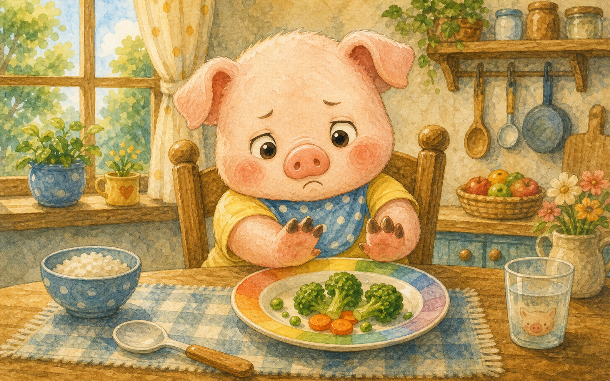
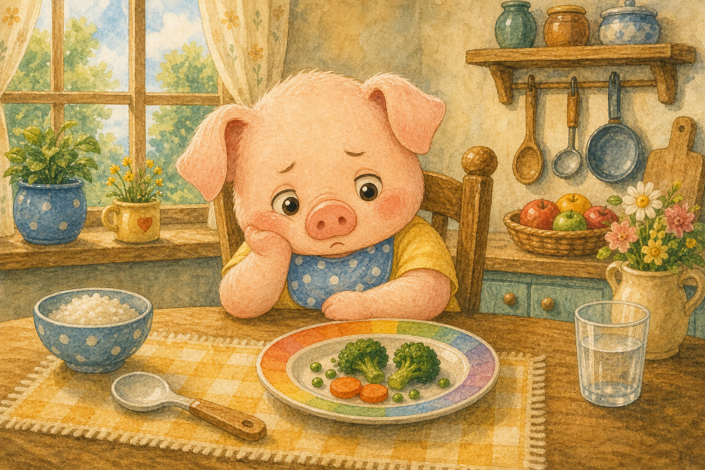
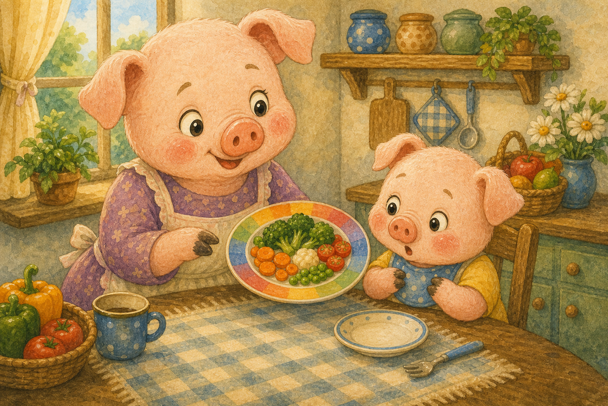
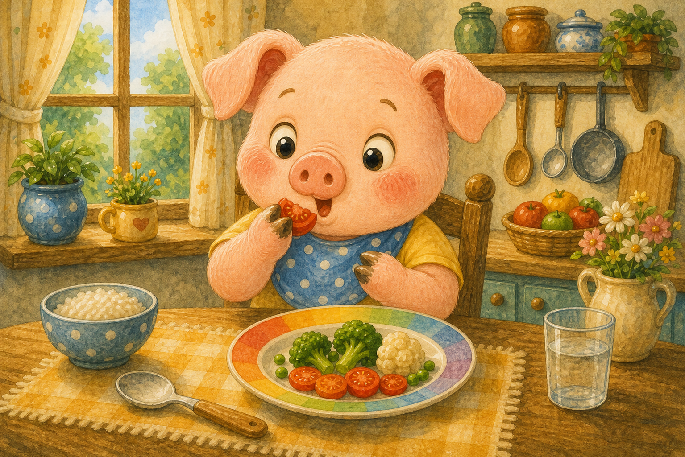
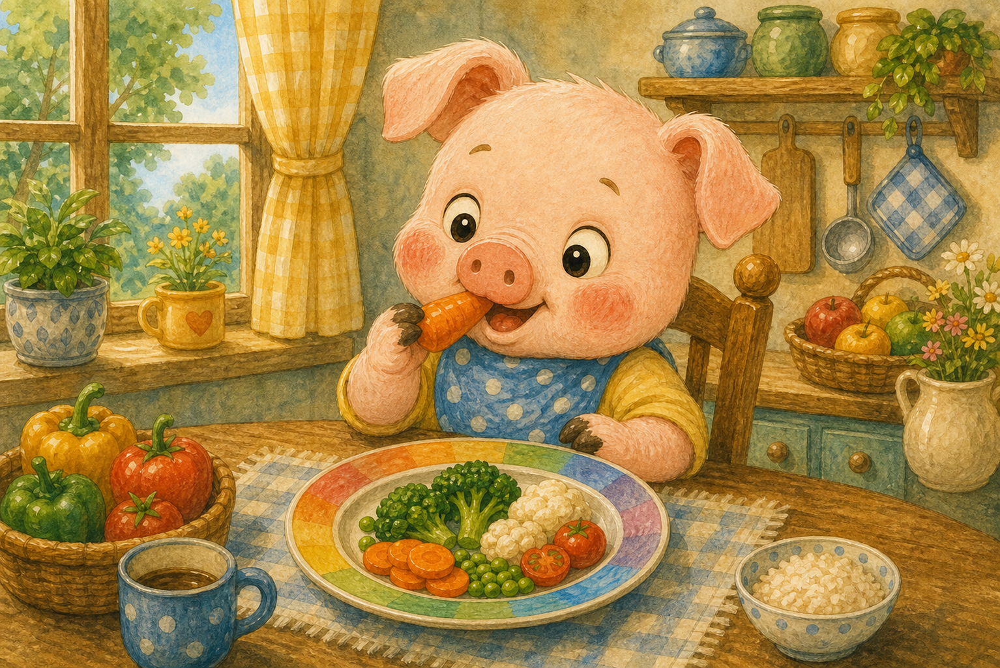
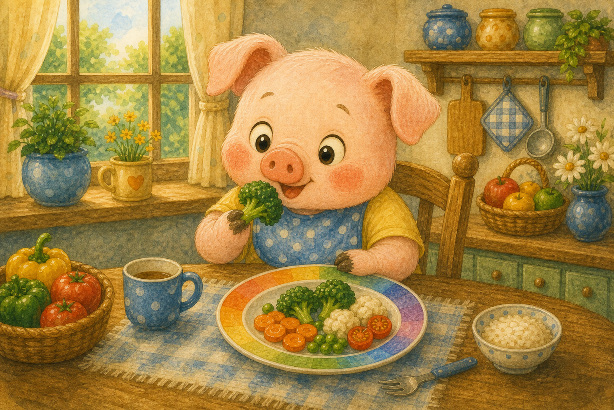
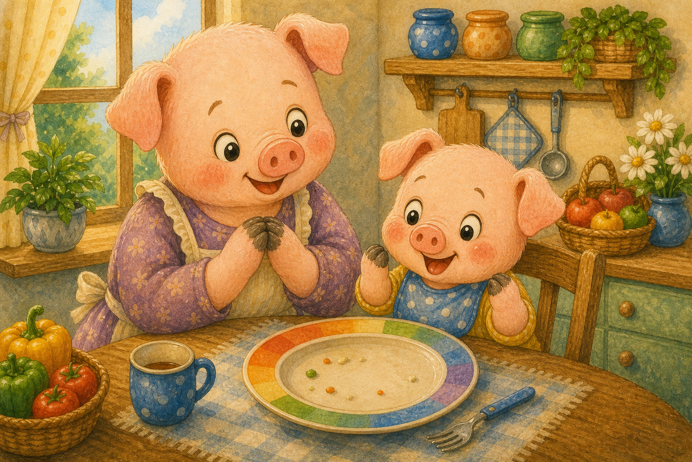
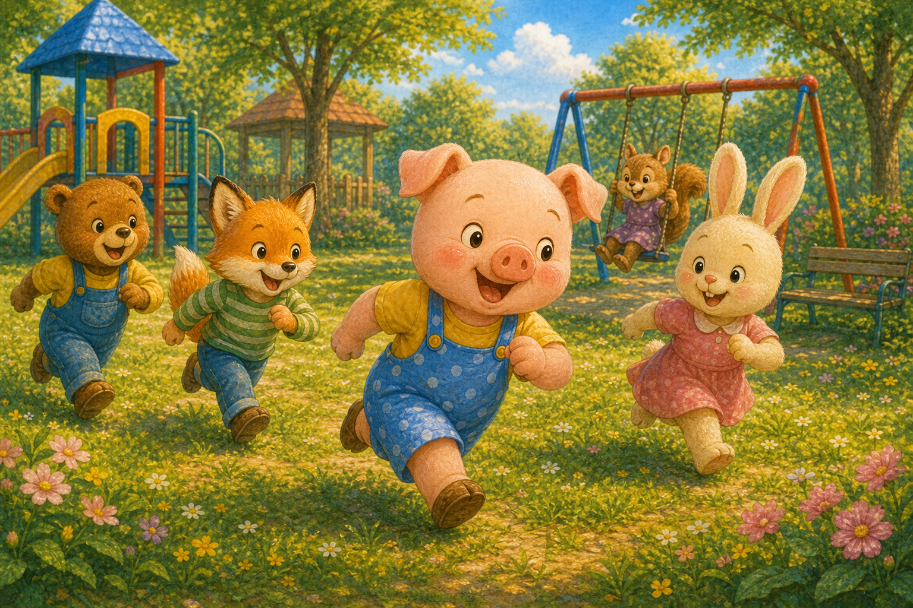
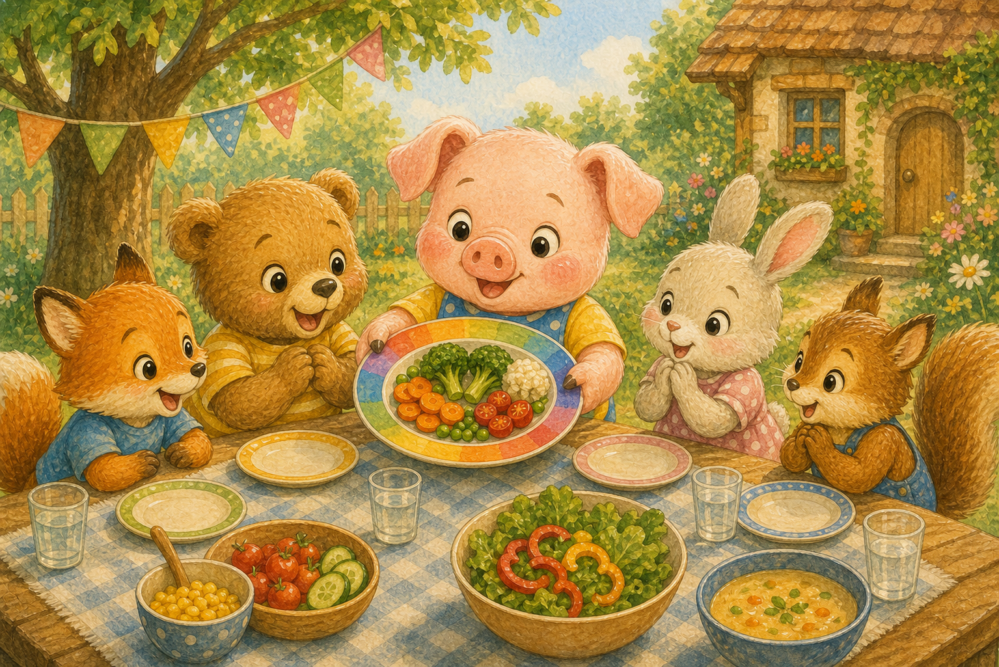
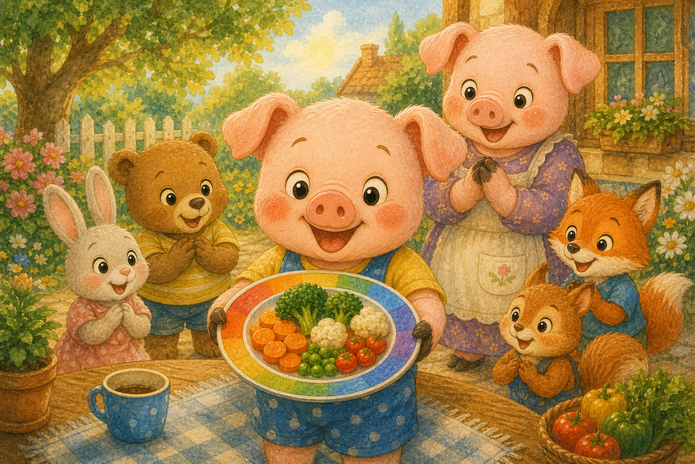

채소는 싫어!
아기 돼지 통통이는 초록 채소만 보면 인상을 찌푸렸어요. 접시 한쪽으로 쓱쓱 밀어내곤 했지요.
"난 고기랑 빵만 먹을래!"

아기 돼지 통통이는 초록 채소만 보면 인상을 찌푸렸어요. 접시 한쪽으로 쓱쓱 밀어내곤 했지요.
"난 고기랑 빵만 먹을래!"

골고루 먹지 않으니 통통이는 금세 힘이 빠졌어요. 신나게 뛰어놀다가도 금방 지쳤지요.
"왜 이렇게 기운이 없지?"

엄마 돼지가 알록달록 무지개 접시를 차려 주었어요. 빨강 토마토, 주황 당근, 초록 브로콜리가 가득했지요.
"색깔마다 다른 힘이 숨어 있대!"

통통이는 용기를 내어 빨간 토마토를 한 입 먹었어요. 새콤달콤한 맛에 눈이 동그래졌지요.
"어? 생각보다 맛있는데!"

다음은 아삭아삭 주황 당근을 먹었어요. 당근은 눈을 반짝반짝 밝게 해 준다고 했지요.
"아삭아삭 소리도 재밌어!"

이번엔 초록 브로콜리를 콕 집어 먹었어요. 초록 채소는 튼튼한 몸을 만들어 준다고 했지요.
"초록도 먹을 만하네!"

어느새 통통이의 무지개 접시가 깨끗이 비워졌어요. 골고루 다 먹은 자신이 무척 대견했지요.
"내가 다 먹었어, 한 조각도 안 남겼어!"

골고루 먹으니 몸에 힘이 불끈 솟았어요. 통통이는 친구들과 오래오래 뛰어놀 수 있었지요.
"이렇게 힘이 넘치다니!"

통통이는 친구들에게 무지개 접시를 자랑했어요. 색깔마다 다른 힘이 있다고 신나게 알려 주었지요.
"너희도 무지개를 먹어 봐!"

이제 통통이는 여러 색깔 음식을 골고루 먹어요. 무지개 접시가 자신을 튼튼하게 해 준다는 걸 알았답니다.
"오늘도 무지개 한 접시 뚝딱!"